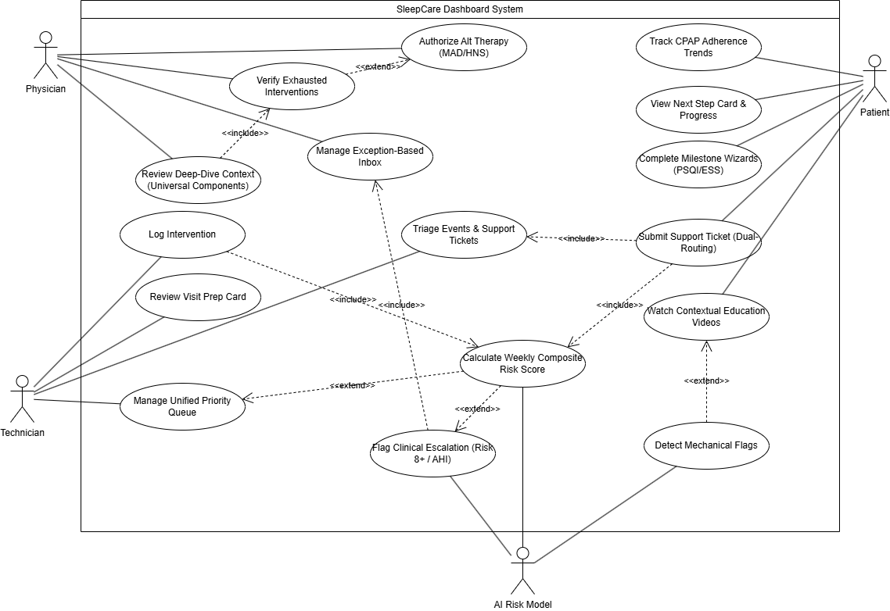
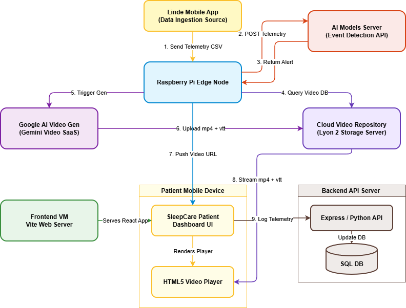

Internship Progress Report (May & June 2026)
Student: Moeez Ahmed
Date: June 30, 2026
Internship Topic: SleepCare - Integrated Sleep Apnea Management Platform
Host Organization: DISP Lab (University of Lyon 2) & Linde Homecare France
1. Supervisor Information
- Academic Supervisor: Yasaman Kakaei Siahkal (PhD Researcher / Project Supervisor, DISP Lab)
- Co-Supervisor: Nejib Moalla (Professor, University of Lyon 2 / DISP Lab)
- Linde Representative: Olivier Grasset (Linde Homecare France)
- Academic Email: yasaman.kakaei-siahkal@univ-lyon2.fr
2. Project Context & Objectives
SleepCare is a digital health platform designed to improve therapy success for patients with Obstructive Sleep Apnea (OSA). Obstructive sleep apnea is a major clinical condition characterized by repeated airway collapses during sleep. Continuous Positive Airway Pressure (CPAP) remains the gold standard therapy, but the clinical challenge lies in patient adherence, with 46–83% failing to maintain long-term compliance within their first year.
Standard care telemonitoring tools remain strictly reactive, generating alerts only after a compliance dropout has occurred. SleepCare aims to solve this by transforming this workflow into a preemptive clinical interception engine:
- Preemptive Interventions: Tracking multi-source digital biomarkers (electrocardiogram, heart rate variability, SpO2, air leak rate) to detect early compliance instability before therapy dropout occurs.
- Role-Based Operational Workspaces: Delivering customized interfaces for the Physician (safety validation, medical overrides), the Technician (home visits, mechanical troubleshooting, inventory management), and the Patient (self-reporting feed, milestone check-ins, targeted educational coaching).
3. Achievements to Date: May & June 2026
Over the past two months, I have completed the core dashboard development phase, integrated AI risk states, and co-authored the conference paper and poster draft for a MedTech submission.
Phase 2: Core Development & Telemetry (May Week 5 - June Week 9)
- Project Initialization: Setup the React 18 + TypeScript + Vite + Tailwind CSS 4 project workspace, including the centralized
api.ts service layer connecting directly with FastAPI.
- Screen Logic & Route Boundaries: Built layout architectures and role-based route guards for Physician, Technician, and Patient interfaces.
- CPAP Trends Tab: Developed a module visualizing CPAP telemetry, including a 7-day usage bar chart, AHI trend lines, and a compliance streak counter.
- Digital Biomarkers Tab: Designed time-series charts for HRV, SpO2, and ODI. Built per-source availability indicator icons (for Withings, Hexoskin, and Somno-Art) and integrated a dimming visual filter when a hardware stream is missing.
Phase 3: AI Integration & Clinical Override Gates (June Weeks 10 - 13)
- AI Weekly State Panel: Designed and implemented the AI state summary panel, which visualizes the patient's risk tier, dropout countdown, and active warning flags (leak instability, usage decay, residual burden).
- Action Recommendation overrides: Built the override gate card. Added three active override buttons (Accept, Modify, Reject) linked to mandatory clinician reason code fields.
- Privacy Cohort Refactoring: Split the reporting view. Created `UniversalReporting` for clinicians using anonymized peer cohorts and `PatientReporting` for the patient companion app, which hides sensitive clinical variables and maps risk levels to patient-friendly statuses.
Phase 4: Scientific Manuscript, Poster & Demonstrations (June Weeks 14 - 18)
- Manuscript Draft & Pivot: Co-authored a conference paper submitted to the SIME 2026 conference. Collaborated with Yasaman to resolve 31 review comments.
- Academic Poster: I designed a print-ready A4 academic poster summarizing the clinical context, workflow, and portal layouts.
- System Demonstration: A live demonstration of the SleepCare platform was presented by my supervisor in Berlin (I was not present at the event, but supported the frontend/backend preparation).
The Research Paper & Poster Experience (The Clinical Pivot)
A major focus of June was co-authoring the conference paper for the MedTech conference. This required a fundamental change in our approach:
The Pivot: The initial draft focused heavily on engineering infrastructure, including MDP titration, tech stack details, and API specifications. In meetings with Yasaman, it was decided that since the paper is for a MedTech conference evaluated by physicians, we had to reframe it around solving clinical challenges. We pivoted from an implementation detail focus to a clinical-value focus.
The Reframing: We centered the patient as the primary actor who is empowered by the companion app. We focused on early preemptive interception, analyzing digital biomarkers to trigger solutions before a dropout occurs rather than reacting after a compliance breach. We backed this up with a literature review mapping clinical pain points to SleepCare solutions.
4. Co-authored Publication Detail
| Paper Title |
SleepCare: A Preemptive, Patient-Centric Platform for Proactive CPAP Adherence Management |
| Authors |
Moeez Ahmed, Mohammad Moloudi, Yasaman Kakaei Siahkal, Olivier Grasset, Nejib Moalla |
| Conference |
IEEE International Conference on Smart Innovations for Medicine and Engineering (SIME 2026) |
| Academic Poster |
High-resolution poster layout shown in Section 9 of this report |
5. Upcoming Schedule: July & August 2026
Following our bi-monthly achievements, the upcoming phase will wrap up the internship:
- Phase 4: Testing & Performance Optimization (July Weeks 19–21): Conduct usability validation testing with DISP technicians and physicians. Optimize Recharts rendering and payload sizes.
- Phase 5: Thesis Writing & Handover (August Weeks 22–24): Complete the internship thesis summarizing requirements, code setup, and clinical outcomes. Prepare slides for the final defense.
6. Challenges Faced
- Data Privacy & Patient Anxiety Constraints: Displaying raw dropout risk statistics or precise cohort rankings to patients could induce anxiety and decrease therapy compliance, while violating health data standards. Resolved by designing separate views, where patients see simple motivational milestones, while technicians and physicians access detailed clinical metrics in a secure portal.
- UI Complexity vs. Alert Fatigue: Designing the physician override gate to support clinical overrides without overwhelming physicians with complex telemetry. Resolved using the exception inbox filters and the simplified override gate controls.
7. System Diagrams
Use Case Diagram
The functional use case diagram detailing the roles and interactions of the Patient, Technician, and Physician portals within the SleepCare ecosystem:

Video Generation Workflow
The video generation and streaming flow enabling patient-centric educational coaching videos to guide patients during CPAP troubleshooting:

8. UI Snapshots & Implementation (May & June Progress)
The following screenshots showcase the current state of the SleepCare dashboard portals and telemetry modules developed during the May and June cycles, illustrating the interface layouts, AI weekly states, and clinician override controls:
Week 6: CPAP Telemetry Trends Tab
Visualizing 7-day usage metrics, AHI trends, and device data validation states:

Week 7: Multi-Source Digital Biomarkers Tab
Displays ECG, HRV, and SpO2 trends from Withings and Hexoskin wearables:

Week 8: Pre- vs. Post-Intervention Analysis
Tracks active interventions and automatically runs pre/post symmetric compliance comparison:

Week 9: Medical Surveys Calendar & Scoring History
Tracks standardized clinical scores (ESS, ISI, PSQI, BDI) relative to severity thresholds:

Week 11: AI Weekly State & Clinician override gate Controls
The decision override gate displaying the Accept/Modify/Reject overrides and reason code selection:

Week 12: Data Privacy Cohort View (Clinical Portal)
The anonymized physician cohort triage dashboard displaying sorted patient risks:

9. Academic Poster Showcase
In addition to the scientific paper, I prepared a print-ready A4 academic poster summarizing the clinical challenge, role-based workflows, and technical achievements. My finalized poster layout incorporates our institutional logos (DISP Lab, Linde, and partner universities) alongside the system architecture flows: